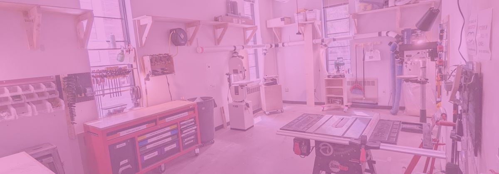
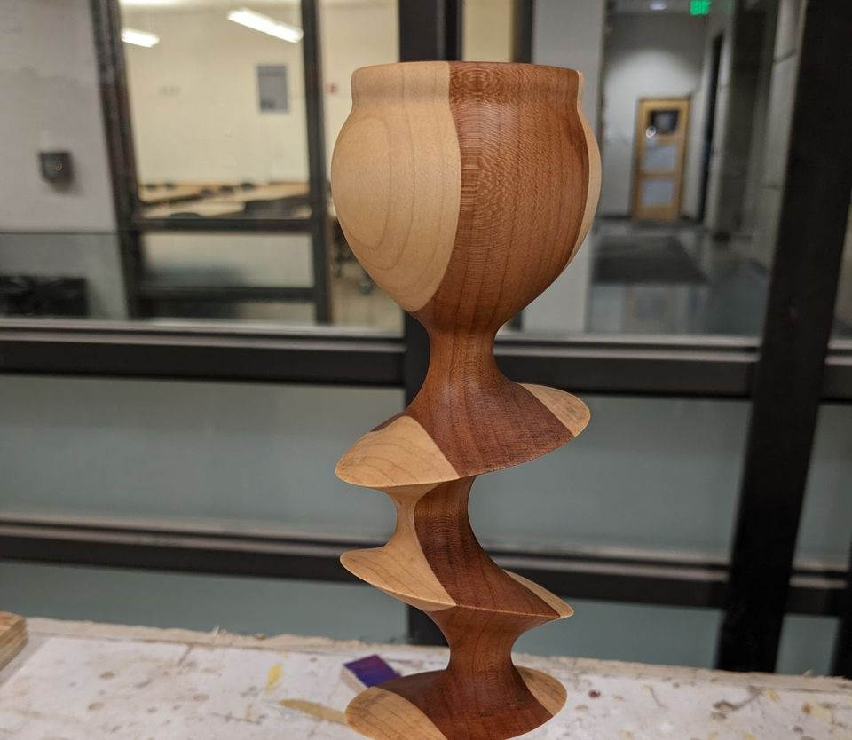

Wood Shop Orientation
REGISTRATION IS REQUIRED! LINK ON THE CALENDAR.
The Wood Shop Orientation schedule can be found on the BTU Lab Calendar.
Orientations are run by the BTU Mischief Maker(s) listed on the BTU Mischief Maker page.

Access to certain machines is facilitated by BTU “Mischief Makers". Anyone can become a "Mischief Maker" on any machine.
*WOOD SHOP access is separate from general BTU access and REQUIRES AN ORIENTATION.*
**FOR YOUR SAFETY, major equipment including table saw, band saw, belt sander, chop saw, and drill press are powered off between the hours of 10pm and 6am, daily.

The Wood Shop Orientation schedule can be found on the BTU Lab Calendar.
Orientations are run by the BTU Mischief Maker(s) listed on the BTU Mischief Maker page.
WOOD SHOP EQUIPMENT
BTU Wood Shop Policies. **FOR YOUR SAFETY, major equipment including table saw, band saw, belt sander, chop saw, and drill press are powered off between the hours of 10pm and 6am, daily. Tampering with timers is considered a serious safety violation. Violation of any wood shop policy will result in loss of access to BTU Lab and the wood shop until both orientations are repeated.